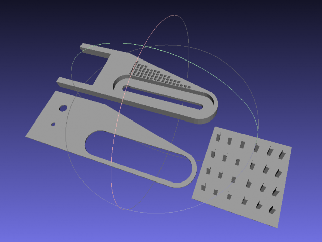

I've often been frustrated when I spot some interesting wildlife but can't get a decent photo. I have a telescope and tried digiscoping a while back - for this you buy an adapter that allows you to take photographs through your telescope with a cameraphone or point-and-shoot camera. The results were quite reasonable (I'm not looking to win a photography award, I just want a record of what I've seen). But the setup was too fiddly to be useful.
In the end I decided to get a camera with a zoom that matched my scope. But this still left the problem of getting the camera quickly lined up on the object of interest. So I've 3d printed a tripod mount that allows me to keep the camera always out alongside the scope ready to shoot. The mount fits under and around the scope mount and keeps the camera aligned with a pin.
